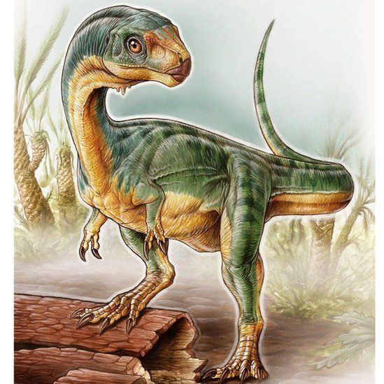

Chilesaurus Diegosuarezi
Great Chilean Dinosaur

Chilesaurus diegosuarezi is the only known species of the extinct genus
Dinosaur Chilesaurus that lived during the Late Jurassic, 150-146 years ago
million years in what is now South America. Their fossils were discovered
in the Aysén region, in Chile.2 At the time of its description,
it was considered one of the few herbivorous theropods known outside
of coelurosaurs.1 It has an unusual combination of features of
theropods, ornithischians, and sauropodomorphs, so this genus has important
implications for understanding dinosaur evolution, such as
as the traditional division between saurischians-ornithischians or as support for the
alternative proposal of the Ornithoscelida group.3 According to fossils
found in the Toqui Formation, Chilesaurus coexisted with another theropod
small-sized, basal crocodyliforms, and sauropod dinosaurs both
diplodocids as titanosaurs.

Chilesaurus measured about 3.2 meters from nose to tail. the little one
head has small, spatula-shaped teeth pointing obliquely forwards. This
dentition, unique to theropods, is typical of a herbivore, indicating that Chilesaurus was
it fed on plants, a very unusual adaptation in theropods, since most were carnivorous.
Another adaptation for eating plants is that the pubic bone in the pelvis points backwards. Such
arrangement of the pelvis is typical of ornithischians, for which reason it was initially believed that
part of the Chilesaurus fossils belonged to this clade. The later members of
Chilesaurus had become less adapted to running, as shown by a small crest
cnemial on the upper front part of the tibia, and a broad foot, with a first toe of
weight support. Chilesaurus could defend itself with a robust arm, provided with two
claws, the first large and widely extended, like basal sauropodomorphs.

![]()